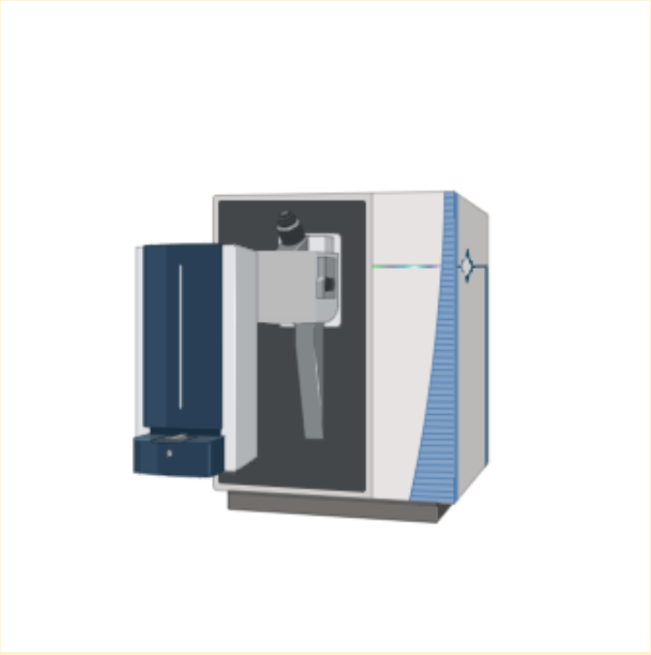

"My customers have stopped swelling up..."
 At Food Detection Analytics, we strive to provide the best and most reliable service to our customers. From New York's 5-star restaraunts to Minnesota's breakfast diners, our product delivers dependable and fast results to ensure a clean and anxiety-free cook-space. Stovetop Spectrometry has revolutionized the production, safety, and quality of food products coming out of commercial kitchens across the world. As our knowledge of food sensitivies and allergies has grown, kitchens have to be more conscientious than ever to prevent cross contamination. Still, many customers with dangerous food allergies can still be put at risk.
Image: made in BioRender
Stovetop spectrometry is possible with the all-new portable mass spectrometer with high-resolution and a quick learning experience. The instrument itself is composed of a laser desorption ionization (LDI) source that is followed by an orbitrap mass spectrometer and finally an electron multiplier for a detector. All of these components have been fit into a “suitcase” form and can be transferred from one restaurant to another if need be. Once the suitcase has reached its destination of use, the handler can open the case and the main sampling arm can then be unfolded and locked into place. This is the same for the feet of the instrument which are also adjustable to fit sturdily onto any stovetop. After the instrument is in a comfortable position the cooking can start underneath the sampling arm and the arm can be lowered or raised for a comfortable positioning for cooking.
Before cooking can start the instrument will have to be calibrated, to do this press the calibration button on the screen and it will have you place three different calibration foods (sold separately). Once that is done the play button can be pressed and cooking may begin. Every thirty seconds the LDI will sample the food until the cooking process is completed. This information will be stored in the instrument for the customer's interest and will be sent off to the USFDA.
Every restaurant that has struggled with contamination issues from time to time will feel as though the Stovetop Spectrometer is a lifesaver. If it were not for the stovetop spectrometer then hundreds of thousands of restaurants would be put out of business. This has now been avoided by working closely with the USFDA and for businesses to not have to send off samples at an expensive rate. If you or a loved one is struggling with contamination issues then Stovetop Spectrometry is right for you!
Choosing Stovetop Spectrometry means choosing your customers, patients, and clients first. Contact us today for a free consultation and open the door for improving accessibility in your kitchen.
"My customers have stopped swelling up..."

“After breaking my spatula while flipping crabby patties...”

"Now my visitors can enjoy Nutella crepes with no fear of gluten contaminants!"
Contact us today for a free consultation and open the door for improving accessibility in your kitchen.